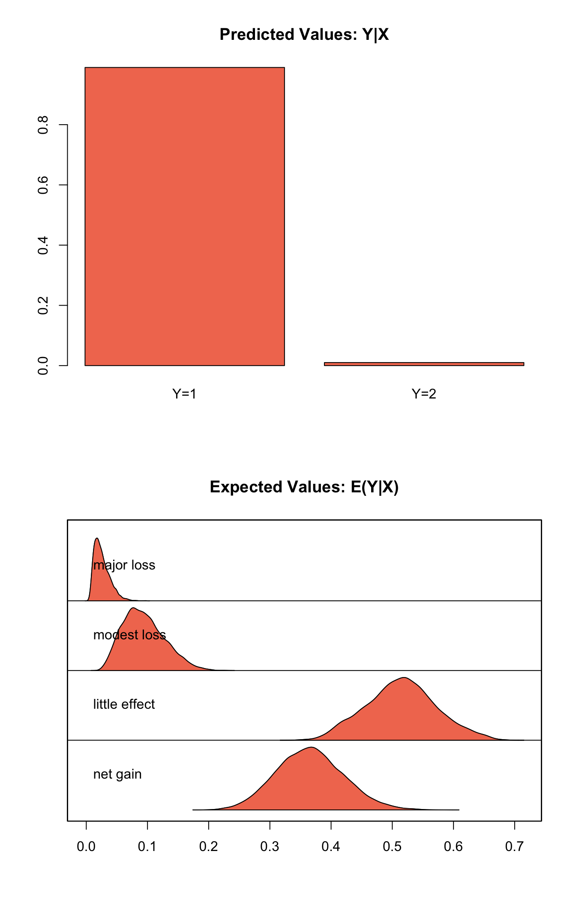
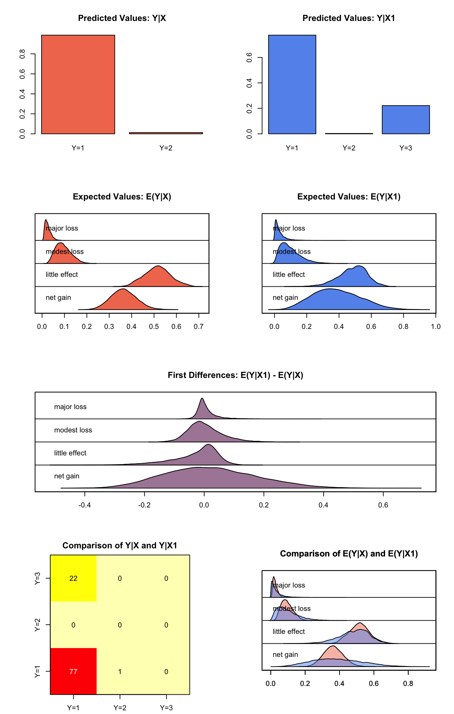

Built using Zelig version 5.1.1.90000
Bayesian Ordered Probit Regression with oprobit.bayes.
Use the ordinal probit regression model if your dependent variables are ordered and categorical. They may take either integer values or character strings. The model is estimated using a Gibbs sampler with data augmentation. For a maximum-likelihood implementation of this models, see \(probit\).
zelig() accepts the following arguments to monitor the Markov chain:
burnin: number of the initial MCMC iterations to be discarded (defaults to 1,000).
mcmc: number of the MCMC iterations after burnin (defaults 10,000).
thin: thinning interval for the Markov chain. Only every thin-th draw from the Markov chain is kept. The value of mcmc must be divisible by this value. The default value is 1.
tune: tuning parameter for the Metropolis-Hasting step. The default value is NA which corresponds to 0.05 divided by the number of categories in the response variable.
verbose: defaults to FALSE If TRUE, the progress of the sampler (every \(10\%\)) is printed to the screen.
seed: seed for the random number generator. The default is NA which corresponds to a random seed 12345.
beta.start: starting values for the Markov chain, either a scalar or vector with length equal to the number of estimated coefficients. The default is NA, which uses the maximum likelihood estimates as the starting values.
Use the following parameters to specify the model’s priors:
b0: prior mean for the coefficients, either a numeric vector or a scalar. If a scalar value, that value will be the prior mean for all the coefficients. The default is 0.
B0: prior precision parameter for the coefficients, either a square matrix (with dimensions equal to the number of coefficients) or a scalar. If a scalar value, that value times an identity matrix will be the prior precision parameter. The default is 0 which leads to an improper prior.
Zelig users may wish to refer to help(MCMCoprobit) for more information.
Attaching the sample dataset:
data(sanction)Creating an ordered dependent variable:
sanction$ncost <- factor(sanction$ncost, ordered = TRUE,
levels = c("net gain", "little effect", "modest loss",
"major loss"))Estimating ordered probit regression using oprobit.bayes:
z.out <- zelig(ncost ~ mil + coop, model = "oprobit.bayes",
data = sanction, verbose = FALSE)## Warning in model.response(mf, "numeric"): using type = "numeric" with a
## factor response will be ignored## How to cite this model in Zelig:
## Ben Goodrich, and Ying Lu. 2013.
## oprobit-bayes: Bayesian Probit Regression for Dichotomous Dependent Variables
## in Christine Choirat, Christopher Gandrud, James Honaker, Kosuke Imai, Gary King, and Olivia Lau,
## "Zelig: Everyone's Statistical Software," http://zeligproject.org/You can check for convergence before summarizing the estimates with three diagnostic tests. See the section Diagnostics for Zelig Models for examples of the output with interpretation:
z.out$geweke.diag()
z.out$heidel.diag()
z.out$raftery.diag()summary(z.out)## Model:
##
## Iterations = 1001:11000
## Thinning interval = 1
## Number of chains = 1
## Sample size per chain = 10000
##
## 1. Empirical mean and standard deviation for each variable,
## plus standard error of the mean:
##
## Mean SD Naive SE Time-series SE
## (Intercept) -0.70884 0.2806 0.002806 0.003643
## mil -0.03777 0.4261 0.004261 0.005290
## coop 0.58615 0.1421 0.001421 0.006407
## gamma2 1.54508 0.2100 0.002100 0.068824
## gamma3 2.33901 0.2079 0.002079 0.065818
##
## 2. Quantiles for each variable:
##
## 2.5% 25% 50% 75% 97.5%
## (Intercept) -1.2686 -0.8964 -0.71022 -0.5179 -0.1649
## mil -0.8709 -0.3223 -0.03745 0.2458 0.8031
## coop 0.3109 0.4876 0.58541 0.6833 0.8651
## gamma2 1.1716 1.4012 1.54594 1.6587 2.0007
## gamma3 1.9596 2.1710 2.35569 2.5174 2.6819
##
## Next step: Use 'setx' methodSetting values for the explanatory variables to their sample averages:
x.out <- setx(z.out)## Warning in model.response(mf, "numeric"): using type = "numeric" with a
## factor response will be ignored## Warning in Ops.ordered(y, z$residuals): '-' is not meaningful for ordered
## factorsSimulating quantities of interest from the posterior distribution given: x.out.
s.out1 <- sim(z.out, x = x.out)
summary(s.out1)##
## sim x :
## -----
## ev
## mean sd 50% 2.5% 97.5%
## net gain 0.36572980 0.05477229 0.36467768 0.263228921 0.47735036
## little effect 0.51452144 0.05730541 0.51491704 0.405081122 0.63053378
## modest loss 0.09409122 0.03377073 0.09046747 0.039422787 0.16742625
## major loss 0.02565754 0.01280610 0.02299233 0.008456503 0.05620498
## pv
## qi
## little effect net gain
## 9.899 0.101plot(s.out1)
Estimating the first difference (and risk ratio) in the probabilities of incurring different level of cost when there is no military action versus military action while all the other variables held at their default values.
x.high <- setx(z.out, mil = 0)## Warning in model.response(mf, "numeric"): using type = "numeric" with a
## factor response will be ignored## Warning in Ops.ordered(y, z$residuals): '-' is not meaningful for ordered
## factorsx.low <- setx(z.out, mil = 1)## Warning in model.response(mf, "numeric"): using type = "numeric" with a
## factor response will be ignored
## Warning in model.response(mf, "numeric"): '-' is not meaningful for ordered
## factorss.out2 <- sim(z.out, x = x.high, x1 = x.low)
summary(s.out2)##
## sim x :
## -----
## ev
## mean sd 50% 2.5% 97.5%
## net gain 0.36441755 0.05718120 0.36286995 0.257333166 0.48163426
## little effect 0.51495887 0.05819281 0.51543715 0.404080101 0.63365673
## modest loss 0.09464458 0.03415380 0.09077461 0.039250227 0.16862880
## major loss 0.02597901 0.01319336 0.02339714 0.008314338 0.05771638
## pv
## qi
## little effect net gain
## 9.873 0.127
##
## sim x1 :
## -----
## ev
## mean sd 50% 2.5% 97.5%
## net gain 0.38605188 0.14502824 0.37606824 0.132115332 0.6837529
## little effect 0.48446752 0.08867854 0.49430922 0.289134384 0.6410279
## modest loss 0.09766831 0.06254942 0.08466310 0.014797357 0.2508351
## major loss 0.03181228 0.03310354 0.02140672 0.001907402 0.1216043
## pv
## qi
## little effect modest loss net gain
## 7.752 0.028 2.220
## fd
## mean sd 50% 2.5% 97.5%
## net gain 0.021634336 0.15213026 0.013861728 -0.25333134 0.33368146
## little effect -0.030491343 0.07937642 -0.008979717 -0.23147468 0.07705122
## modest loss 0.003023733 0.05759052 -0.004654414 -0.09209956 0.13623530
## major loss 0.005833273 0.03225283 -0.001821396 -0.03574447 0.09160508plot(s.out2)
Let \(Y_{i}\) be the ordered categorical dependent variable for observation \(i\) which takes an integer value \(j=1, \ldots, J\).
\[ \begin{aligned} Y_{i}^* \sim \textrm{Normal}(\mu_i, 1).\end{aligned} \]
Instead of \(Y_i^*\), we observe categorical variable \(Y_i\),
\[ \begin{aligned} Y_i = j \quad \textrm{ if } \tau_{j-1} \le Y_i^* \le \tau_j \textrm{ for } j=1,\ldots, J. \end{aligned} \]
where \(\tau_j\) for \(j=0,\ldots, J\) are the threshold parameters with the following constraints, \(\tau_l < \tau_m\) for \(l < m\), and \(\tau_0 = -\infty, \tau_J = \infty\).
The probability of observing \(Y_i\) equal to category \(j\) is,
\[ \begin{aligned} \Pr(Y_i=j) &=& \Phi(\tau_j \mid \mu_i)-\Phi(\tau_{j-1} \mid \mu_i) \textrm{ for } j=1,\ldots, J \end{aligned} \]
where \(\Phi(\cdot \mid \mu_i)\) is the cumulative distribution function of the Normal distribution with mean \(\mu_i\) and variance 1.
\[ \begin{aligned} \mu_{i}= x_i \beta, \end{aligned} \]
where \(x_{i}\) is the vector of \(k\) explanatory variables for observation \(i\) and \(\beta\) is the vector of coefficients.
\[ \begin{aligned} \beta \sim \textrm{Normal}_k\left( b_{0},B_{0}^{-1}\right) \end{aligned} \]
where \(b_{0}\) is the vector of means for the \(k\) explanatory variables and \(B_{0}\) is the \(k \times k\) precision matrix (the inverse of a variance-covariance matrix).
qi$ev) for the ordered probit model are the predicted probability of belonging to each category:\[ \begin{aligned} \Pr(Y_i=j)= \Phi(\tau_j \mid x_i \beta)-\Phi(\tau_{j-1} \mid x_i \beta), \end{aligned} \]
given the posterior draws of \(\beta\) and threshold parameters \(\tau\) from the MCMC iterations.
The predicted values (qi$pr) are the observed values of \(Y_i\) given the observation scheme and the posterior draws of \(\beta\) and cut points \(\tau\) from the MCMC iterations.
The first difference (qi$fd) in category \(j\) for the ordered probit model is defined as
\[ \begin{aligned} \text{FD}_j=\Pr(Y_i=j\mid X_{1})-\Pr(Y_i=j\mid X). \end{aligned} \]
qi$rr) in category \(j\) is defined as\[ \begin{aligned} \text{RR}_j=\Pr(Y_i=j\mid X_{1})\ /\ \Pr(Y_i=j\mid X). \end{aligned} \]
qi$att.ev) for the treatment group in category \(j\) is\[ \begin{aligned} \frac{1}{n_j}\sum_{i:t_{i}=1}^{n_j} \{ Y_{i}(t_{i}=1)-E[Y_{i}(t_{i}=0)] \}, \end{aligned} \]
where \(t_{i}\) is a binary explanatory variable defining the treatment (\(t_{i}=1\)) and control (\(t_{i}=0\)) groups, and \(n_j\) is the number of observations in the treatment group that belong to category \(j\).
qi$att.pr) for the treatment group in category \(j\) is\[ \begin{aligned} \frac{1}{n_j}\sum_{i:t_{i}=1}^{n_j}[Y_{i}(t_{i}=1)-\widehat{Y_{i}(t_{i}=0)}], \end{aligned} \]
where \(t_{i}\) is a binary explanatory variable defining the treatment (\(t_{i}=1\)) and control (\(t_{i}=0\)) groups, and \(n_j\) is the number of observations in the treatment group that belong to category \(j\).
The output of each Zelig command contains useful information which you may view. For example, if you run:
z.out <- zelig(y ~ x, model = "oprobit.bayes", data)then you may examine the available information in z.out by using names(z.out), see the draws from the posterior distribution of the coefficients by using z.out$coefficients, and view a default summary of information through summary(z.out). Other elements available through the $ operator are listed below.
From the zelig() output object z.out, you may extract:
coefficients: draws from the posterior distributions of the estimated coefficients \(\beta\) and threshold parameters \(\tau\). Note, element \(\tau_1\) is normalized to 0 and is not returned in the coefficients object.
zelig.data: the input data frame if save.data = TRUE.
seed: the random seed used in the model.
From the sim() output object s.out:
qi$ev: the simulated expected values (probabilities) of each of the \(J\) categories for the specified values of x.
qi$pr: the simulated predicted values (observed values) for the specified values of x.
qi$fd: the simulated first difference in the expected values of each of the \(J\) categories for the values specified in x and x1.
qi$rr: the simulated risk ratio for the expected values of each of the \(J\) categories simulated from x and x1.
qi$att.ev: the simulated average expected treatment effect for the treated from conditional prediction models.
qi$att.pr: the simulated average predicted treatment effect for the treated from conditional prediction models.
Bayesian ordinal probit regression is part of the MCMCpack library by Andrew D. Martin and Kevin M. Quinn . The convergence diagnostics are part of the CODA library by Martyn Plummer, Nicky Best, Kate Cowles, and Karen Vines.
Martin AD, Quinn KM and Park JH (2011). “MCMCpack: Markov Chain Monte Carlo in R.” Journal of Statistical Software, 42 (9), pp. 22. <URL: http://www.jstatsoft.org/v42/i09/>.